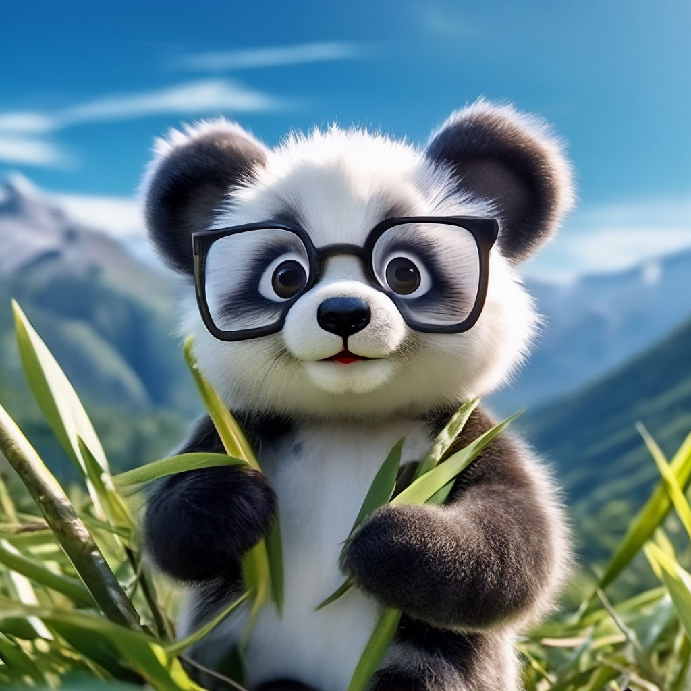
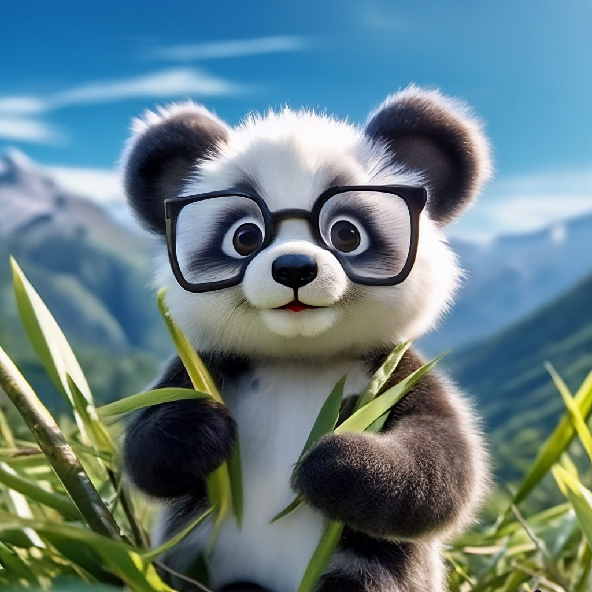

2️⃣ Notion
.webp)
По запросу
ссонная кошечка в костюме акулы сидит уныло каляки маляки абстрактно логотип графично схематично символ квадратный неказистый прямоугольник грустный кривой эмоционально минимализм набросок черным карандашом детский простой примитивный по белой шероховатой бумаге размашисто нанесено v.2.0
3️⃣
4️⃣ Opus Clip

По запросу
котёнок в скворечнике
крупным планом, лохматый пушистый милый, необычный ракурс, выразительные большие глаза, профессиональное фото, реалистично, высокое разрешение, высокая детализация, глубина кадра, объёмные тени, dark fantasy, dark botanical, rmx-v7, UHD, 4k
5️⃣ Vizard

По запросу
милая реалистичная
пушистая панда в очках прячется в зарослях бамбука
, в лапах держит веточку, пушистый чёткий мех, горы, синее небо, профессионалфото, country style, rmx-v7, UHD, 4k,
.webp)
4️⃣ Opus Clip
По запросу
котёнок в скворечнике крупным планом, лохматый пушистый милый, необычный ракурс, выразительные большие глаза, профессиональное фото, реалистично, высокое разрешение, высокая детализация, глубина кадра, объёмные тени, dark fantasy, dark botanical, rmx-v7, UHD, 4k
5️⃣ Vizard
По запросу
милая реалистичная пушистая панда в очках прячется в зарослях бамбука , в лапах держит веточку, пушистый чёткий мех, горы, синее небо, профессионалфото, country style, rmx-v7, UHD, 4k,